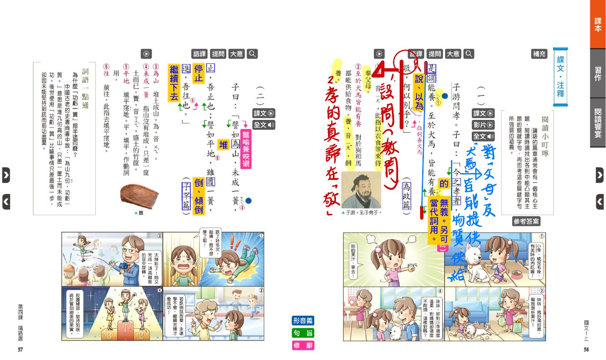
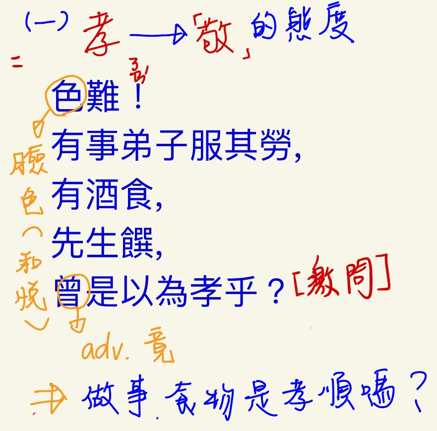
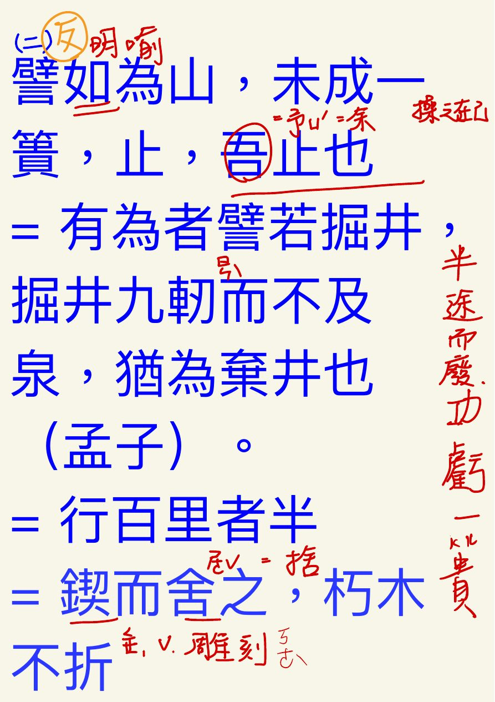
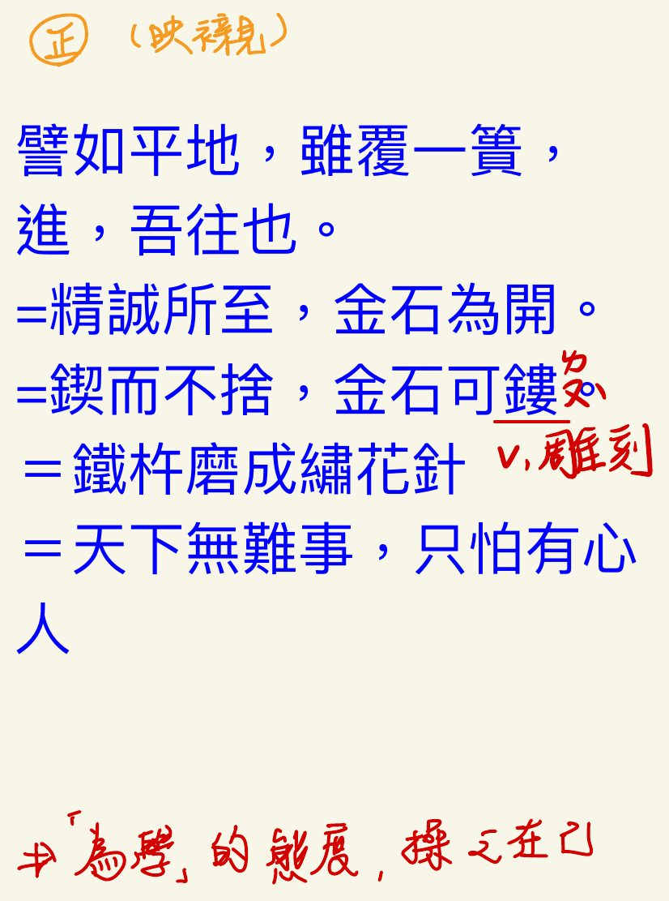
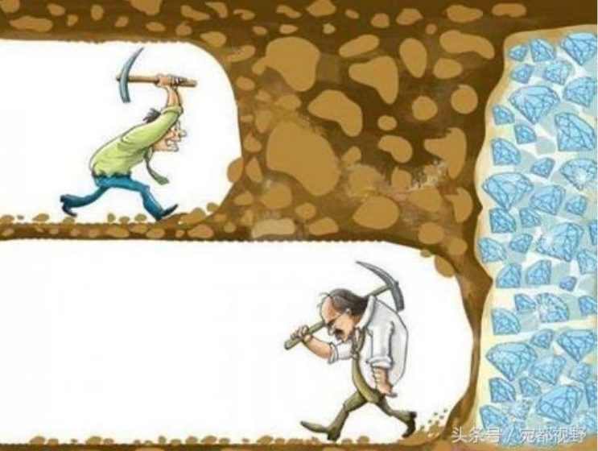
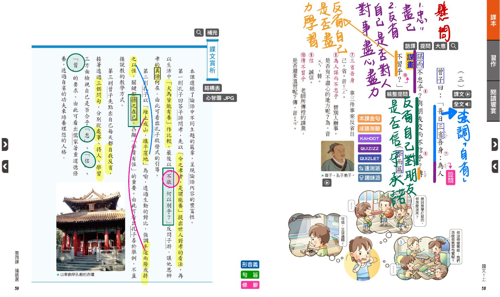
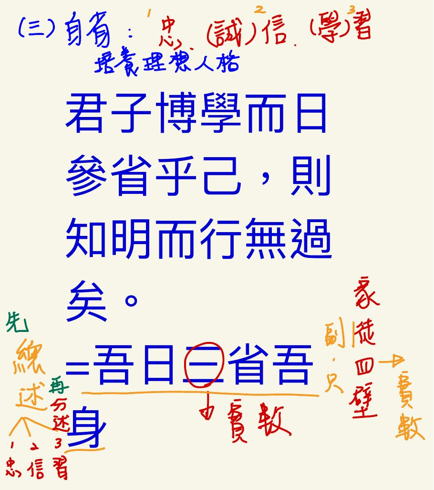
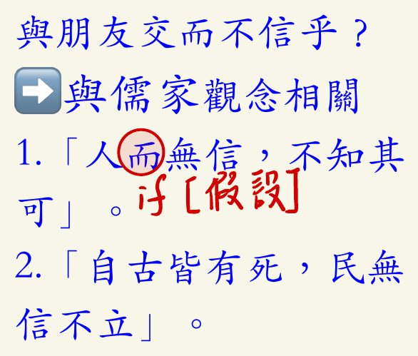

一、文言文課文
- 孔子與弟子及時人的談論、應答語錄。
- 編者：孔子弟子與再傳弟子。
- 篇數：全書共 20 篇，各篇取首句二至三字作為篇名（篇名與內容無關）。
- 內容：孔子對教育、修身、治國的見解。
- 地位：（1）儒家重要經典 （2）四書之一
子游問孝。子曰：「今之孝者，是謂能養。至於犬馬，皆能有養；不敬，何以別乎？」
注釋：①子游：孔子弟子。②是謂能養：養，ㄧㄤˋ，奉養父母。③至於犬馬皆能有養：對於狗和馬都能供給食物。養，ㄧㄤˇ，飼養。④不敬，何以別乎：設問（激問），沒有尊敬之心，用什麼來區別呢？
課文賞析：第一則孔子回答子游問孝，先以「今之孝者，是謂能養」提出世人對孝的看法，再以生活中「犬馬皆能有養」作比較，最後以「不敬，何以別乎？」反問子游，讓他思辨孝的真諦何在。由此可看出孔子啟發式的引導。
句意：
- 今之孝者，是謂能養。 → 現在所謂的孝，只是指能夠奉養父母、供給他們衣食。
- 至於犬馬，皆能有養； → 至於狗和馬，人們也都能飼養、供給牠們食物。
- 不敬，何以別乎？ → 如果沒有敬意，那麼奉養父母和飼養犬馬，又有什麼區別呢？
修辭：設問（激問）：「不敬，何以別乎？」答案在問句反面，強調沒有敬意就不算孝；並以「犬馬」作類比對照，凸顯孝的關鍵在「敬」。
主旨：孝不只是物質上的供養，更重要的是對父母要有尊敬的態度（孝的真諦在「敬」）。
延伸對照：
- 〈為政〉另一則：有事，弟子服其勞；有酒食，先生饌，曾是以為孝乎？（難道只是替父母做事、供給酒食，就算孝嗎？）
漫畫情境：課本漫畫：妹妹對小狗很溫柔，對媽媽卻不耐煩——只顧物質供給、態度不敬，就不是真正的孝。


子曰：「譬如為山，未成一簣，止，吾止也；譬如平地，雖覆一簣，進，吾往也。」
注釋：①為山：堆土成山。為，ㄨㄟˊ。②未成一簣：山沒有堆成，只差一筐土。簣，ㄎㄨㄟˋ，盛土的竹筐。③止：停止。④平地：填平窪地。平，填平，作動詞用。⑤覆：倒、傾倒。⑥進：繼續下去。⑦往：前往，此指去填平窪地。修辭：譬喻兼映襯。
課文賞析：第二則孔子以「堆土成山，填平窪地」為喻，透過生動的對比，強調半途而廢或持之以恆，關鍵都操之在己，凸顯「學貴有恆」的重要。由此可看出孔子善於舉例，不直接說教的教學方式。
句意：
- 譬如為山，未成一簣，止，吾止也； → 好比堆土成山，只差最後一筐土就完成了，這時停下來，是我自己決定要停的。
- 譬如平地，雖覆一簣，進，吾往也。 → 好比填平窪地，即使才倒下一筐土，只要繼續向前，也是我自己決定要前進的。
修辭：譬喻兼映襯：以「為山」「平地」比喻為學做事；「未成一簣而止」與「雖覆一簣而進」正反對比，凸顯半途而廢與持之以恆的差別。
主旨：為學、做事要持之以恆，成敗關鍵操之在己（學貴有恆）。
延伸對照：
- 「止，吾止也」（半途而廢）：有為者譬若掘井，掘井九軔而不及泉，猶為棄井也（《孟子》）；行百里者半九十；鍥而舍之，朽木不折（《荀子》）。
- 「進，吾往也」（持之以恆）：精誠所至，金石為開；鍥而不捨，金石可鏤；鐵杵磨成繡花針；天下無難事，只怕有心人。
- 課堂圖示：挖礦者離鑽石只差一步卻轉身放棄，正是「功虧一簣」。
漫畫情境：課本漫畫：滑冰女孩跌了好多次想放棄，被勸說要堅持，反覆練習後終於站上頒獎台。



曾子曰：「吾日三省吾身：為人謀而不忠乎？與朋友交而不信乎？傳不習乎？」
注釋：①三省吾身：拿三件事來反省自己。省，ㄒㄧㄥˇ。②為人謀而不忠乎：替別人辦事，是否有不盡心的地方？為，ㄨㄟˋ，替。③信：誠信。④傳不習乎：老師所傳授的課業，是否還未溫習？傳，ㄔㄨㄢˊ。
課文賞析：第三則曾子先點出自己每天都自我反省，接著透過三個問句，分別從處事、待人、學習三方面檢視自己是否合乎「忠」、「信」、「習」的要求。由此可看出儒家著重道德修養，透過自省的功夫來培養理想的人格。
句意：
- 吾日三省吾身： → 我每天拿三件事來反省自己：
- 為人謀而不忠乎？ → 替別人辦事，有沒有不盡心盡力的地方呢？
- 與朋友交而不信乎？ → 和朋友往來，有沒有不守信用的地方呢？
- 傳不習乎？ → 老師所傳授的學業，我有沒有溫習呢？
修辭：設問（提問）：三個問句都是問自己、不求別人回答，表示自我檢討；「日」強調每天自省。
主旨：從處事（忠）、待人（信）、學習（習）三方面反省，重視道德修養與自省功夫。
字義：忠：盡己，對事盡心盡力；信：誠信，對朋友信守承諾；習：溫習、學習。
延伸對照：
- 君子博學而日參省乎己，則知明而行無過矣（《荀子》）＝吾日三省吾身。
- 與儒家觀念相關：「人而無信，不知其可」（而＝如果，表假設）；「自古皆有死，民無信不立」。
漫畫情境：課本漫畫：說好放學打球卻失約、忘了帶壁報紙害同學無法布置教室，說明待人要守信、做事要盡責。



二、字音字形整理（依形近字分類）
三、即時選擇題
共 0 題 已作答 0 答對 0